REPORT DE DESIGN · v0.7
#1b1630, acento #e2733a. Nada entrou em assets/sprites/: aguardando escolha do dono. O quadradinho magenta nas ampliações marca o hotspot.Seta branca clássica; ao passar em algo usável vira a luva do astronauta apontando (punho laranja).
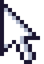
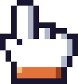
Seta laranja (acento das máquinas); ao passar em algo usável fica branca e ganha um selo dourado de faísca.
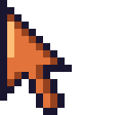
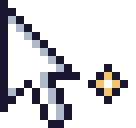
Mira de astronauta, hotspot no centro; ao passar em algo usável as pontas viram colchetes laranja fechando.
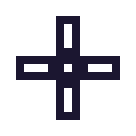
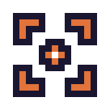
Cada imagem está no tamanho lógico (150×70 px); aqui exibida a 4×, o mesmo que o jogo faz no tamanho de UI Grande.
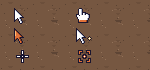
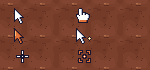
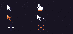
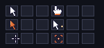
Esquerda: fundo de areia com os 3 conjuntos (normal em cima, interativo embaixo). Direita: sobre um painel escuro.
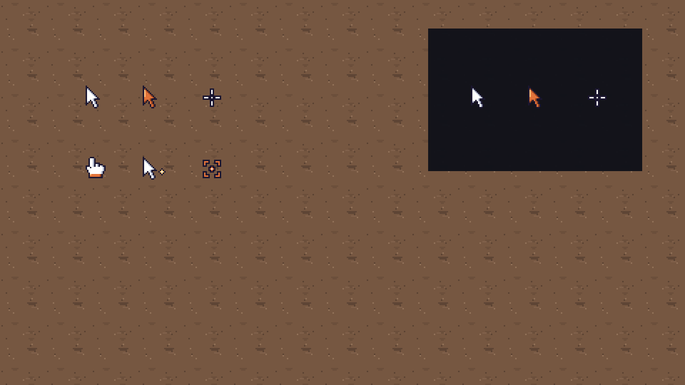
UI.draw_cursor(x, y) em game/ui.py (~linha 2995), chamado em game/app.py (~2365) e game/title.py (~294) com mouse_ui. Trocar o polígono por surf.blit(sprite, (x - hot_x, y - hot_y)) e escolher normal/interativo conforme o mouse esteja sobre algo usável (caixa, terminal, baú, máquina, destroço; o Dev já sabe isso pro realce/prompt). Esconder o cursor do sistema (pygame.mouse.set_visible(False)) se ainda não estiver.pendentes/ para assets/sprites/ui/ ou similar; o contrato §6 precisa ganhar o nome):| Opção | Normal | Tam. | Hotspot | Interativo | Tam. | Hotspot |
|---|---|---|---|---|---|---|
| A | cursor_A_normal.png | 11×16 | (0, 0) | cursor_A_interativo.png | 14×15 | (4, 0) |
| B | cursor_B_normal.png | 17×16 | (0, 0) | cursor_B_interativo.png | 17×16 | (0, 0) |
| C | cursor_C_normal.png | 17×17 | (8, 8) | cursor_C_interativo.png | 17×17 | (8, 8) |
Gerado por python3 tools/sprites/build_cursor_v07.py (determinístico). Metadados em pendentes/cursor_meta.json.